| Larch: X-ray Data Analysis |
XAFS: Pre-edge Subtraction and Normalization
XAFS: Fourier Transforms for XAFS
Background subtraction is one of the most important data processing steps
in EXAFS analysis, converting the measured  into the
into the
 ready for quantitative analysis. In Larch, this step is
performed by the autobk() function, which has many options and
subtleties. This section is devoted to background subtraction with the
autobk() function and the underlying algorithm it uses.
ready for quantitative analysis. In Larch, this step is
performed by the autobk() function, which has many options and
subtleties. This section is devoted to background subtraction with the
autobk() function and the underlying algorithm it uses.
Determine the post-edge background function, , and
corresponding .
| Parameters: |
|
|---|---|
| Returns: | None. |
If a group argument is provided, the following data is put into it:
attribute meaning bkg array of (not normalized) chie array of 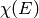 values. k array of values, on uniform grid. chi array of delta_chi array of uncertainty in delta_bkg array of uncertainty in . autobk_details Group of arrays with autobk details.
Here, the arrays group.k, group.chi will be the same length,
giving from 0 to a maximum k value set by kmax or
the range of available data. The arrays group.bkg and
group.chie will correspond to the input energy array.
The parameters e0 and edge_step are needed to determine
, and can be specified here. If they are not, but the
input group has attributes e0 and edge_step – say, from
running pre_edge() – those values will be used. If values
cannot be found in either place, they will be determined by calling
pre_edge() from within autobk(). The pre_edge_kws
argument can be used here for parameters to pass to pre_edge(),
and the output parameters from it will be added to the output
group.
If calc_uncertainties is set to True, the outputs
group.delta_chi and group.delta_bkg, holding the uncertainties
in and , respectively. These
calculations are relatively costly, and can take 20 times longer to
determine and themselves.
The group.autobk_details group will contain the following attributes:
attribute meaning spline_pars Parameters used for determining spline. init_bkg Initial value for init_chi Initial value for knots_e Spline knot energies knots_y Spline knot values init_knots_y Initial Spline knot values
The background subtraction method used is the AUTOBK algorithm, in
which a spline function is matched to the low-R components of the
resulting .
For reference, 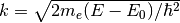 is the wavenumber of
the ejected photo-electron, where  is the absorption threshold
energy (the 0 of photo-electron energy). For in units of
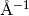 and in units of eV, 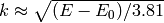. With this conversion of energy to wavenumber,
is defined from
is the absorption threshold
energy (the 0 of photo-electron energy). For in units of
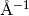 and in units of eV, 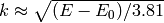. With this conversion of energy to wavenumber,
is defined from
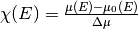
where represents the idealized x-ray absorption of a
bare atom, embedded in the molecular or solid environment, but without
scattering of the outgoing photo-electron that gives rise to the EXAFS, and
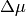 is the edge step in .
The quantity cannot be independently measured. Instead,
we empirically determine it here given the data for by
fitting a spline (a piece-polynomial function that is easily adjusted even
while its smoothness is controlled) to . An advantage to
what could easily be described as an ad hoc approach is that the data for
can include many systematic drifts and dependencies that are
slowly varying with energy.
The definition above normalizes to the edge step
(edge_step) instead of the energy-dependent , as is
often described in introductory texts on EXAFS. The reason for this is
essentially the same – so that we do not need to carefully take care of
slow energy drifts in the measured or worry about having an
absolute measure of .
A spline is a general mathematical function, and so using one to match
that we will subtract from the same could
easily match too well, and erase much of the data we’re interested in.
Therefore, we have to carefully consider two aspects:
- what portions of the spectrum we want it to match, and
- how flexible the spline can be.
What we want is a that removes the low frequency (low-R)
portions of the  spectra, and recognizing this can tell us how
to determine both of these.
spectra, and recognizing this can tell us how
to determine both of these.
First, since we know the EXAFS oscillations do not extend far below the
near-neighbor distance and since atoms are essentially never closer than 1
, and generally more like 2 , we can say that
we want to remove the frequencies of below some distance,
(rbkg). That is, we want the spline function to
be adjusted so that the components of  below 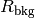 are minimized. We can use a default of 1 , and
recommend that the value be roughly half the expected near-neighbor
distance.
below 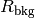 are minimized. We can use a default of 1 , and
recommend that the value be roughly half the expected near-neighbor
distance.
To do this, we create a spline function consisting of
adjustable points (knots in the spline, where the second derivatives are
allowed to change), evenly spaced in (that is, quadratic in
energy). We do a fit that adjusts the values of the function at each knot,
computes by simple spline interpolation, calculates
, does a Fourier transform to , and then
seeks to minimize the components of below .
This leads to the second question of how flexible to make the spline is answered from basic signal processing through the Nyquist-Shannon sampling theorem, which tells us how many adjustable parameters to use for our spline:
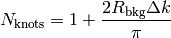
where  is the range of the data. This value can
be over-ridden by specifing nknots, but this is strongly recommended
against.
is the range of the data. This value can
be over-ridden by specifing nknots, but this is strongly recommended
against.
In this way we satisfy both considerations above: limiting the number of
knots prevents the spline from being able to follow the frequencies of
we care about most, and limiting the portion of the
spectrum to be minimized to the very low-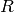 components, we do not
even try to match those frequencies. Thus, we are ensured of a
that only removes the low- components of
.
In order to determine , we must do a Fourier transform. These are discussed in more detail in the next section, but here we give the parameters affecting the Fourier transform used, and their default values.
argument meaning default, recommended values kmin 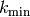
- should be below 1.0
kmax 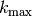 highest value. Useful data range. kweight 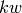
- should be 0 or 1 (but not > 2)
win window function name Hanning, Parzen works well too. dk window sill size
- should be 0 or 1
nfft FFT array size
- No reason to change this.
kstep step size 0.05. No reason to change this.
The most important point is that the Fourier transform used to fit
and visualize is not necessarily the one to use here. In
particular, the kweight parameter should be 0 or 1 here, as we want to
emphasize the low- portion of . The default
parameter values for autobk() are generally sufficient, and need only
minor adjustments except in unusual cases.
¶We said above that we want to minimize the low- components of
. In principle, there should be some leakage of the first
shell to fairly low-. This is especially noticeable for a short
ligand (say, below 1.75 or so) of a low-Z atom (notably, C,
N, and O). Normally, this is not a serious problem, but it does point out
that might want to leave some first-shell leakage at
low-.
To accout for this, you can proved a spectrum of for a
standard that is meant to be close to the spectrum being analyzed. This is
done by providing 2 arrays: k_std and chi_std, which need to be the
same lenth. By providing these, the best values for will
be those that minimize the Fourier transorm of the difference of
for the data and standard. This can be especially helpful
to give more consistent background for a set of related spectra.
Because the spline is chosen to match the low- components of
, the process does not even look at how the resulting
looks. This can lead to some unstable behavior at the
end-points of the spline, causing to diverge at the ends.
This can be remedied by adding clamps to the end-points of 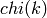
to the fit. That is, a few points at the low- and high-ends of the
array are appended to the array to be minimized in the fit,
which has the tendency to push the end-points of to zero.
There are three parameters influencing these end-points clamps. nclamp
sets the number of data points of at the beginning and end
of the range to add to the fit. clamp_lo sets the weighting
factor applied to the first nclamp points for the low- end fo
the data range, and clamp_hi sets the weighting factor applied to the
last nclamp points at the high- end.
There is not an easy way to determine ahead of time what the clamp
parameters will be. Typically, nclamp need only be 1 to 5 data points
(with 2 being the default). Setting nclamp to 0 will remove the clamps
completely. Values for clamp_lo and clamp_hi are floating point
numbers, and should range from about 1 (the default) to 10 or 20 for a very
strong clamp that will almost certainly force to be 0 at
the end-points.
Here, we give a few recommendations on what parameters most affect the background subtraction. These parameters are (in roughly increasing order):
0. rbkg: This is the main parameter that sets how flaexible the spline function can be.
1. e0: It can be hard to know what
2. kweight: Increasing this emphasizes the fit at high k. Trying both values of 0 and 1 is always a good idea.
3. clamp_lo and clamp_hi: If swoops up or down at the endpoints too much, increasing these values can help greatly.
Here, we give a few examples using autobk(), and outline some of its features.
The simplest example of reading data and doing background subtraction would using all the default inputs would be:
## examples/xafs/doc_autobk1.lar
fname = 'cu_rt01.xmu'
cu = read_ascii(fname)
autobk(cu.energy, cu.xmu, rbkg=1.0, group=cu)
newplot(cu.energy, cu.xmu,
xlabel='Energy (eV)', ylabel=r'$\mu(E)$',
xmin=cu.e0-100, xmax=cu.e0+300,
title=fname)
plot(cu.energy, cu.bkg, color='black')
newplot(cu.k, cu.chi*cu.k, xlabel=r'$k \rm\, (\AA^{-1})$',
ylabel=r'$k\chi(k)$', title=fname,win=2)
## end of examples/xafs/doc_autobk1.lar
with the resulting outputs looking like this:
Thus demonstrating that we can process data on Cu metal.
For a slightly more challenging example, we try the As K-edge of scorodit
(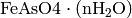). Here, we start by reading in data and
constructing , then run autobk() with all default
settings:
## examples/xafs/doc_autobk2.lar
fname = 'scorodite_as_xafs.001'
title = 'FeAsSO4 (scorodite)'
dat = read_ascii(fname)
dat.energy = dat.p1
dat.xmu = ln(dat.d1/dat.d2)
autobk(dat.energy, dat.xmu, rbkg=1.0, group=dat)
newplot(dat.energy, dat.xmu,
xlabel='Energy (eV)', ylabel=r'$\mu(E)$',
title=title, xmin=dat.e0-50, xmax=dat.e0+550)
plot(dat.energy, dat.bkg, color='red', style='dashed')
newplot(dat.k, dat.chi*dat.k**2, xlabel=r'$k \rm\, (\AA^{-1})$',
ylabel=r'$k^2\chi(k)$', title=title, win=2)
## end of examples/xafs/doc_autobk2.lar
The resulting outputs looks OK:
A close examimation of 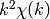 suggests we might be able to do better, which brings us to the next section.
For the scorodite example above, the XAFS diverges from 0 at the high- end of the spectra. Playing with the spline clamps discussed above, we try a few options to study the effect of adding a clamp:
## examples/xafs/doc_autobk3.lar
fname = 'scorodite_as_xafs.001'
title = 'FeAsSO4 (scorodite)'
dat = read_ascii(fname)
dat.energy = dat.p1
dat.xmu = ln(dat.d1/dat.d2)
autobk(dat.energy, dat.xmu, rbkg=1.0, group=dat, clamp_hi=0)
dat.chi0 = dat.chi * dat.k**2
autobk(dat.energy, dat.xmu, rbkg=1.0, group=dat, clamp_hi=2)
dat.chi2 = dat.chi * dat.k**2
autobk(dat.energy, dat.xmu, rbkg=1.0, group=dat, clamp_hi=5)
dat.chi5 = dat.chi * dat.k**2
autobk(dat.energy, dat.xmu, rbkg=1.0, group=dat, clamp_hi=10)
dat.chi10 = dat.chi * dat.k**2
newplot(dat.k, dat.chi0, label='clamp_hi=0', show_legend=True,
xmin=4,
xlabel=r'$k \rm\, (\AA^{-1})$', ylabel=r'$k^2\chi(k)$',
title='Effect of clamp_hi')
plot(dat.k, dat.chi2, label='clamp_hi=5', show_legend=True)
plot(dat.k, dat.chi5, label='clamp_hi=5', show_legend=True)
plot(dat.k, dat.chi10, label='clamp_hi=10', show_legend=True)
## end of examples/xafs/doc_autobk3.lar
results in the following comparison:
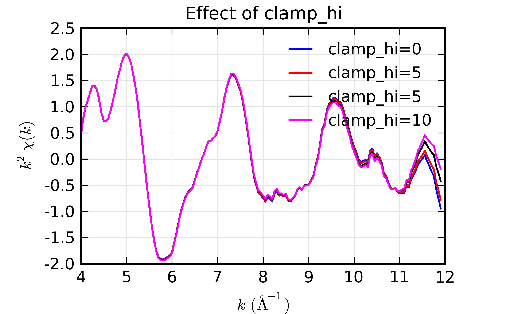Figure 4. Influence of spline clamps of
¶

{kind=link}
{kind=link}
{kind=link}